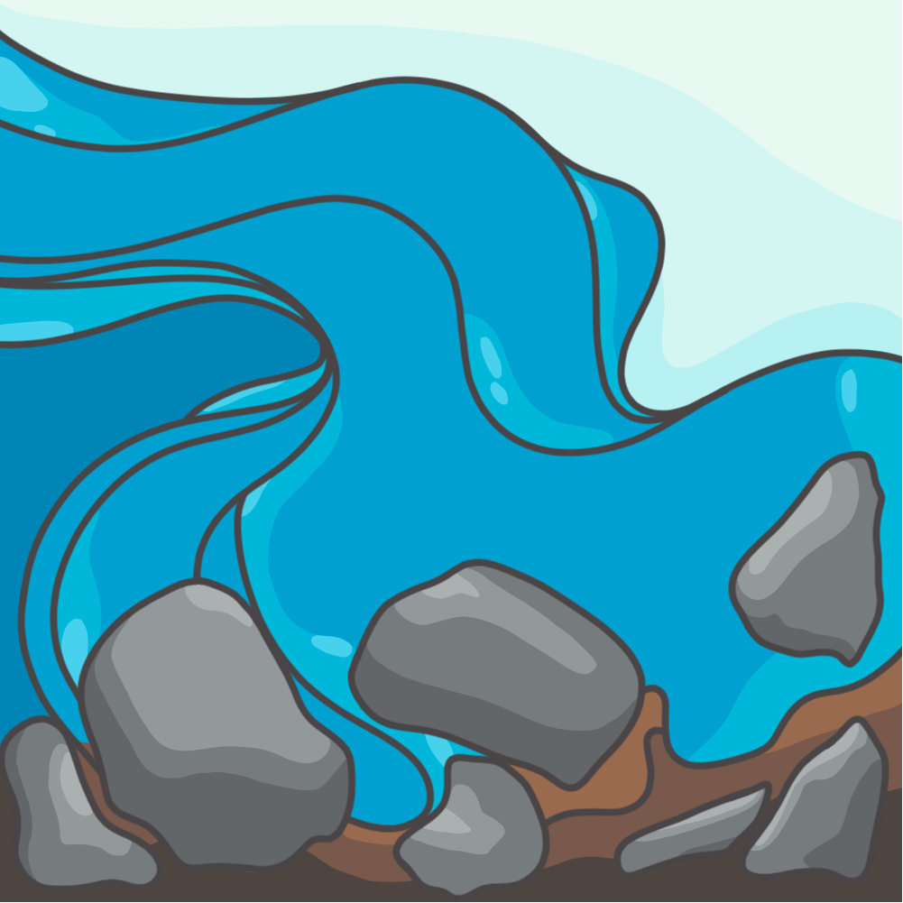

Click below for my home page.
| Name: | River |
|---|---|
| Pronouns: | She/They |
| Gender: | Detrans Transmasc Bigender |
| Sexuality: | Bi Lesbian, Asexual Spectrum, likely Aromantic? |
I am non-binary and radical acceptance has been my bedrock, the new way that I see myself beyond hitting "rock bottom".
Diagnosis is privilege; it's intended for billing purposes. Your diagnostic status does not matter to me & your experiences will always be heard. If you are against self diagnosis, you are supporting the insurance industry.
A river is a flux point between systems, but it is also a system itself. We are a system of our thoughts and desires, and we are also a part of a larger system of thoughts and desires — those from our fields, family, peers, enemies, masters, servants, etc. Earth is finite/infinite, as are we & all the creatures that live here.
I have a bachelors of science in Geology, with a minor in Environmental Science. I graduated from Rutgers-Newark with honors in 2021. Prior to that I graduated from Essex County College, right across the street.
I Can Share my Sources.
I keep extensive lists of resources and research documents on several of these topics. Reach out if you are interested.
All of the content on my pages was created by myself. Please respectfully admire my artwork from a distance, and do not save copies of my pieces locally to your personal folder unless we've already explicitly spoken beforehand.